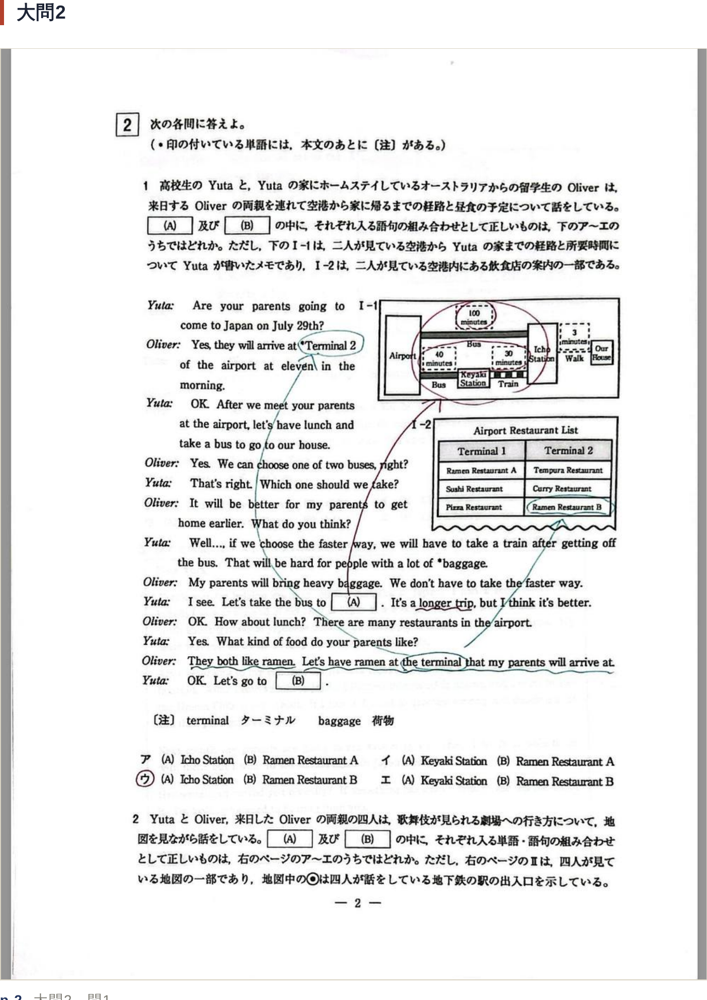
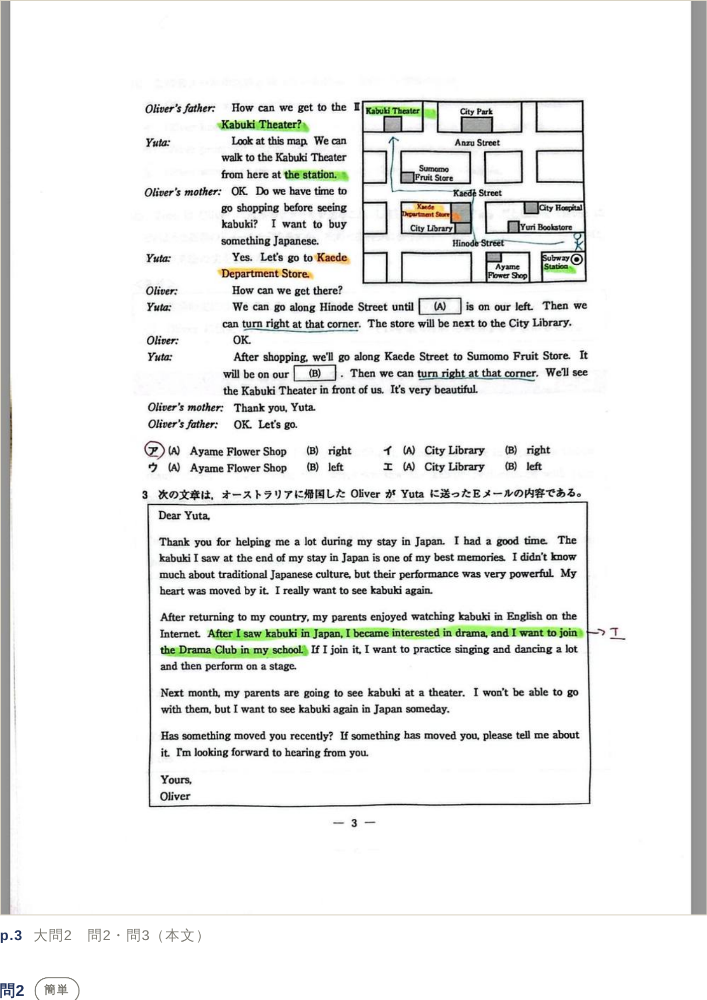
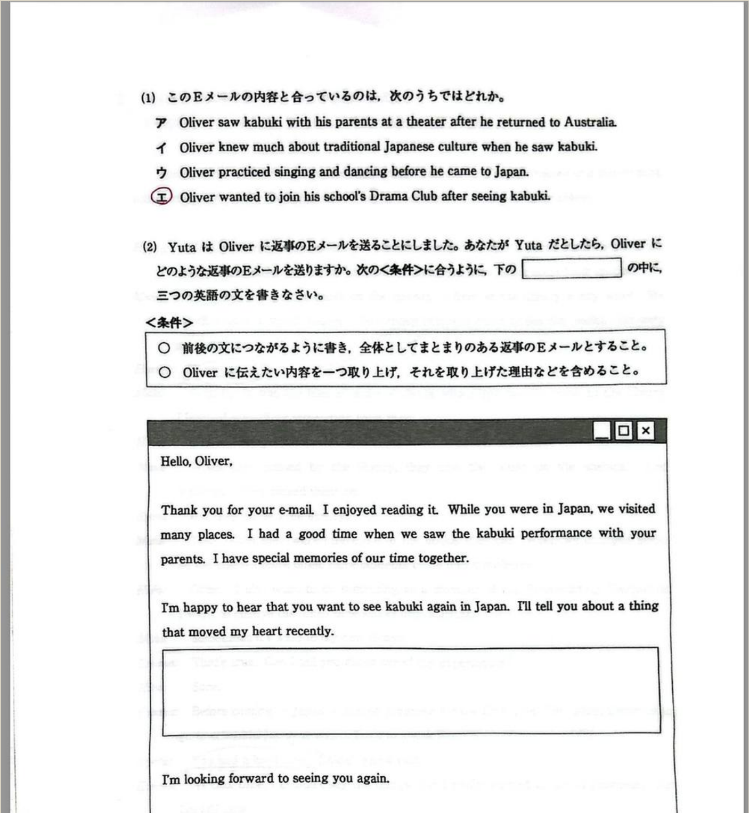
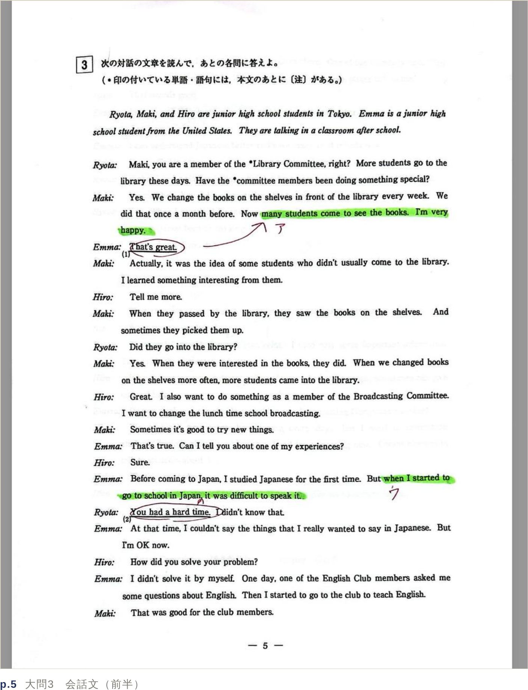
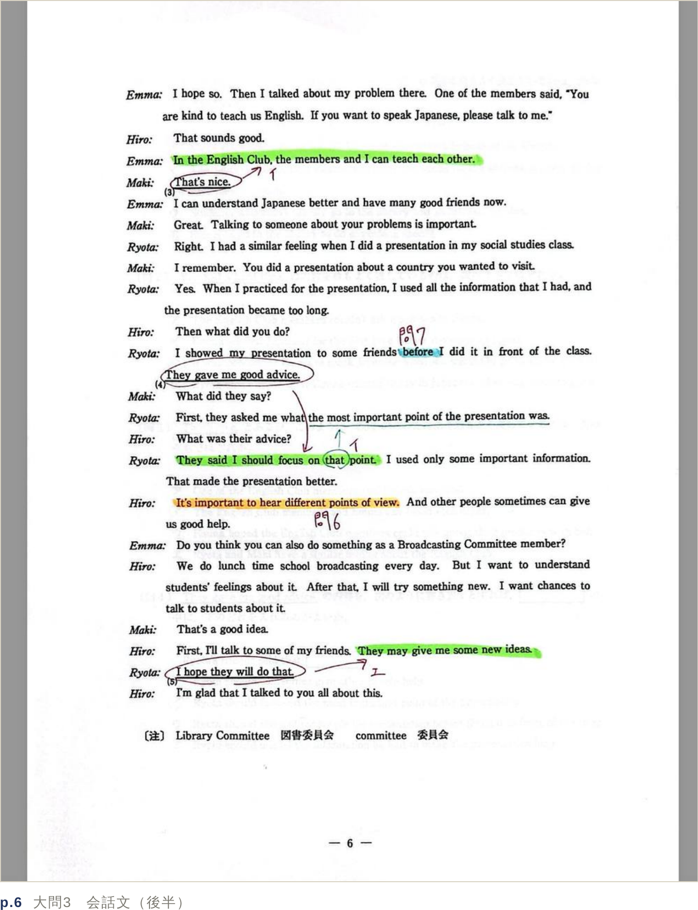
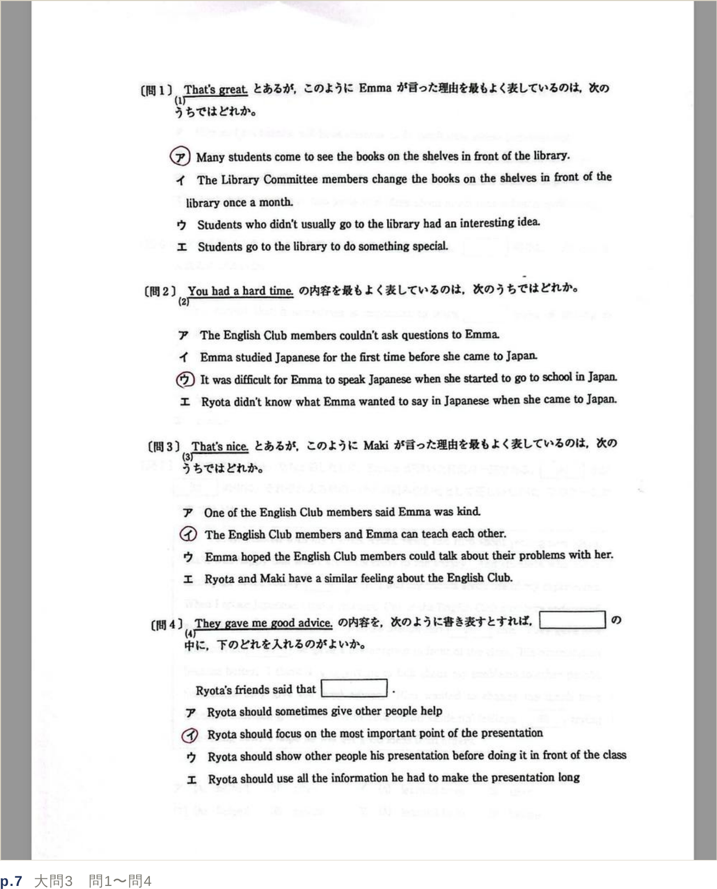
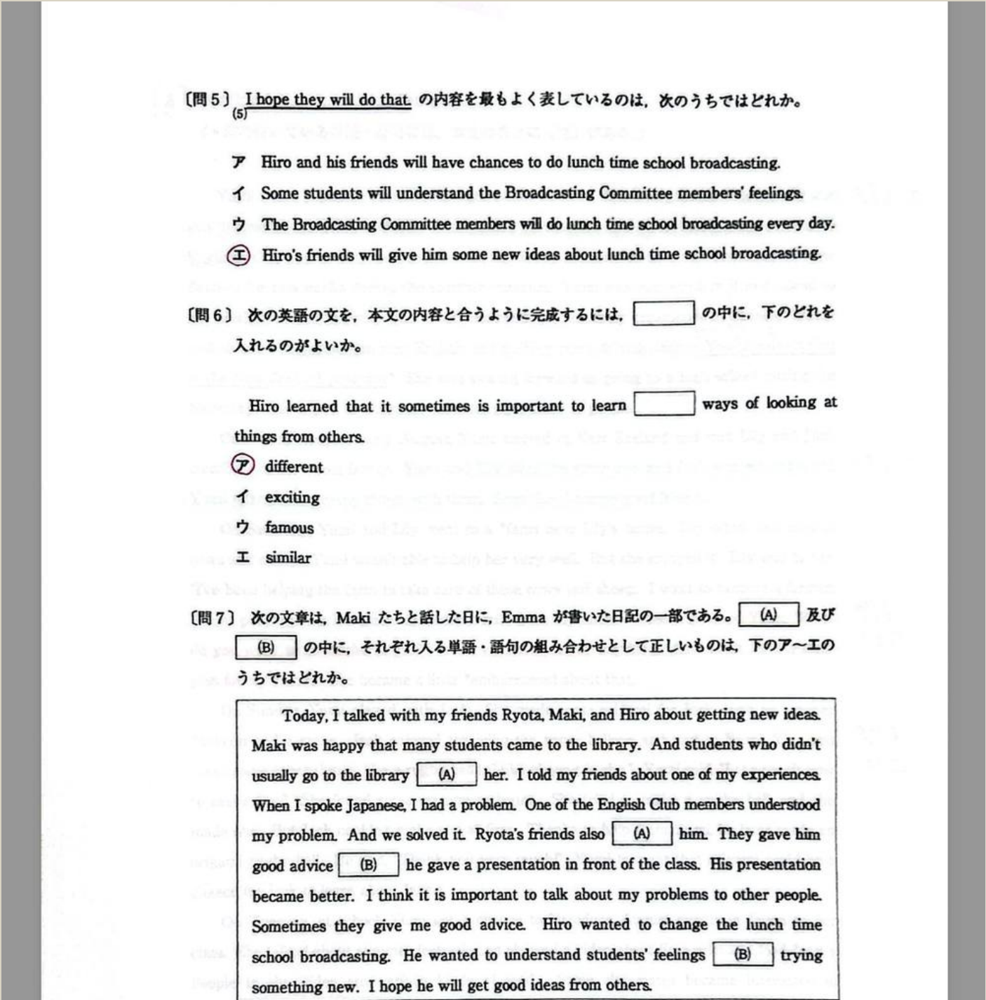
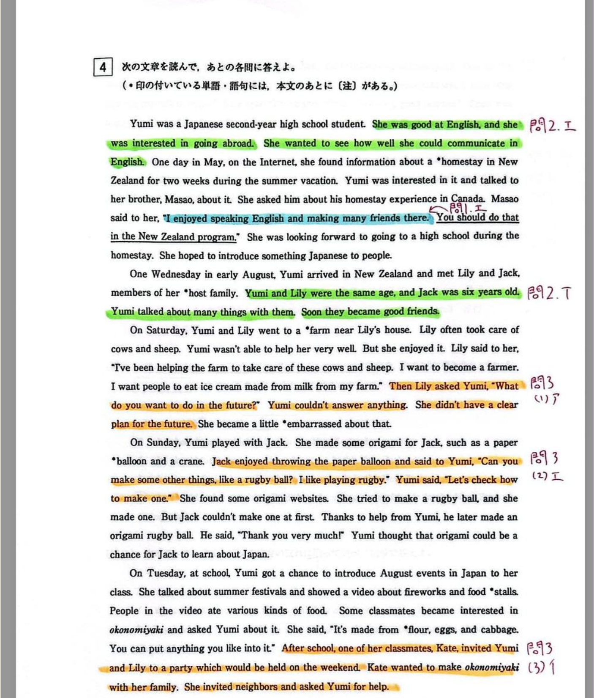
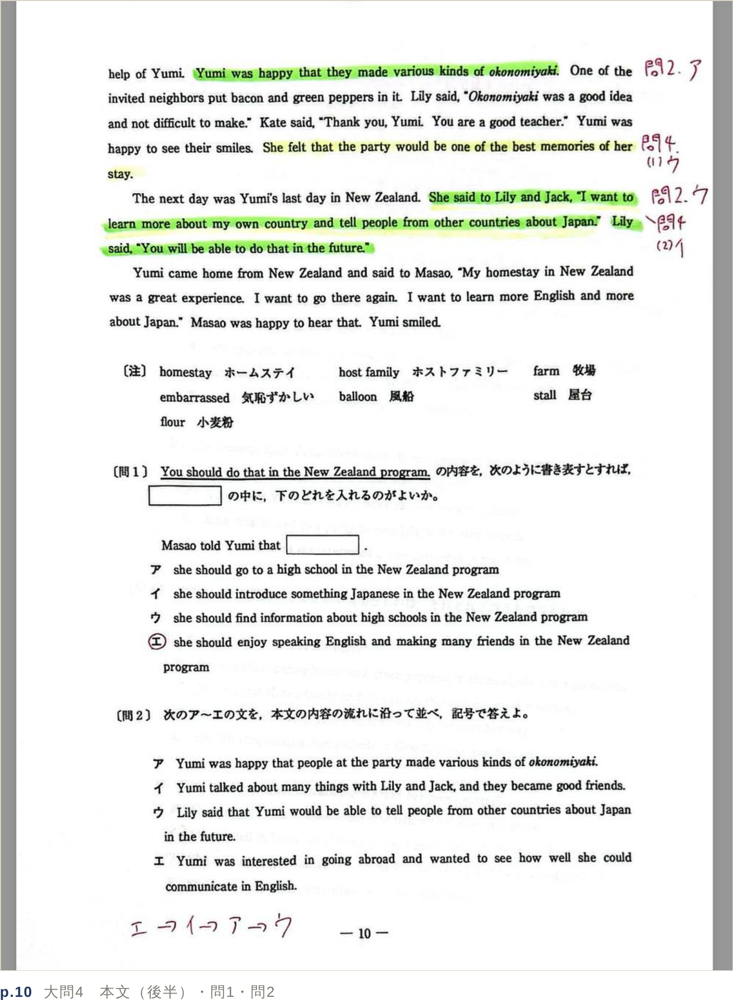
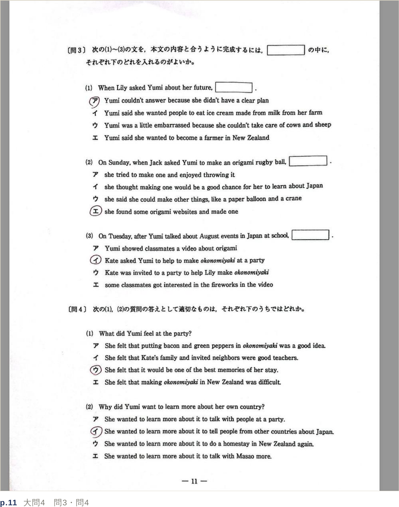

都立高校入試・英語の解き方と指導のポイント。生徒が「毎回お決まりの解き方」で解けるようになるまで、講師がこの手順を確認してあげてください。
都立の英語は、しっかりと対策をすれば基本的に50点以上は取れるようになります。毎回お決まりの解き方で解けるように慣れるまでは、解き方のポイントを確認してあげると良いです。
都立英語の特徴として、文法の細かい知識を問う問題は大問3の問6しかありません。なので、文法の知識や問題演習よりは単語力・読解力が重要です。都立の過去問をやり始める目安は、関係代名詞までの学習が終わっていることが前提です。都立の英語は過去問を何度もやって解き方を身につけることが最短距離です。
V模擬や都トレなどの類似問題は演習としては有用ですが、問題の質は良くないです。具体的には過去問と比べて、語注のある英単語が異常に多い、大問2の問3の根拠がイマイチである（2択までは絞れるが答えの決め手に欠ける）、英文の内容が都立っぽくない（都立の英語は教科書的な無難な内容が多いが、類似問題は私立の問題文に近い）、大問4の答えの根拠になる箇所が一部に偏っている、などが挙げられます。
入試は1点でも多く取ることが目的です。合格できればいいので、すべての英文を完全に理解する必要はないということを意識しましょう。ただし基礎力は必要不可欠なので、直前期までは基礎力の強化に励みましょう。
| 大問 | 目安 | 調整の考え方 |
|---|---|---|
| 大問1 | 10分 | 問題Bを飛ばす場合は6分 → 余った4分で大問2を読み進める |
| 大問2 | 13分 | 英作文を書かない場合は10分 → 余った3分を大問3か4に使う |
| 大問3 | 13分 | |
| 大問4 | 13分 | |
| 計 | 49分 | 残り1分はマークミスがないかの確認 |
問題の取捨選択をすることで、リスニングと英作文で最大7分くらいは節約できます。その時間を使って大問2〜4を解きましょう。
問題Aは頑張って解きましょう。特に数字や曜日、疑問詞などに注意して聴きましょう。
問題Bは Question 1 は簡単ですが、Question 2 は難しいので、出来ない生徒は捨てましょう。ただし時間がもったいないので、問題Bの時間から先に大問2の英文を読み始めましょう。
基本的には自宅や自習室などで生徒に自主的にやらせましょう。必要に応じて塾でやる場合は、本番通りに解かせる → スクリプトの穴埋め（答えの根拠になるキーワードや数字、疑問詞など）を作成して、それを読みながら書き取りをやらせると良いです。その場合は問題Bも全問解かせて構いません。
まず、日本語の説明文を必ず読みましょう。
ただし、簡単な足し算・引き算、数の大小を比べる必要があります。「今は△△だから、次は○○、明日は□□」というふうに、問題と図を読みながら考える必要があることもあるので注意しましょう。
ここは簡単な情報処理能力が問われているので、とにかく慣れが大事です。
問題を先に見て、「だれが・なにを・どうしたか」を意識しながら読みましょう。必ず、似たような表現で本文に答えが書かれています。基本的にはトピックセンテンスを見つけられれば簡単なのですが、「本文に書いてあるけれどトピックセンテンスではないから誤答」というパターンもあるので、中3には難しいです。答え以外の選択肢は、だれが・なにを、が本文と逆だったり、本文に書いていなかったりと変なところがありますが、判断が難しい年や選択肢の質の悪い問題もあるので、出来なくても仕方ないです。
基本的に英作文はテンプレートを覚えれば、テーマに応じて英単語を少し変えるだけで8割は取れるようになります。苦手な生徒はこの表現を参考にしてください。
秘訣は、とにかく簡単な文を英語で書くことです。自由英作文は減点方式ですので、小学生レベルでいいから、ちゃんとした文を書くことが大切です。日本語で思いついていることをそのまま英文にするのはかなり難しいです。どうしても苦手な場合は、簡単な日本語で下書きをしてそれを英語にするという方法でも良いです。英語に直せない場合は、他の日本語にどんどん言い換えていきましょう。
ありがちなミスは、日本語で難しく考えてしまって表現が思い付かないパターンや、無駄に長く複雑な文を作ってしまうことです。どんなに難しい単語や表現を使ってもスペルミスや文法ミスをしたら減点されるので、背伸びをしない。特に時制のミス、三人称単数のsのつけ忘れ、スペルミス、ピリオドを確認する。
接続詞を無駄にいくつも使いたがる生徒もいるので、基本的に「接続詞は1文につき1個まで」というルールをつくりましょう。接続詞の乱用は文法ミスに繋がります。
長めの会話文です。
that, this, it, the, such, do といった単語は、下線部の前のほうにそれらが指している言葉があります。よって、前の文章から探すのが王道です。もし見つからなかったら、後ろにあるはずです。a は下線部の後ろにあります。探してもなかったら前を見ましょう。基本的には、指示語や代名詞が何を指しているかを確認するだけの簡単な問題ばかりです。
下線部の近くにないことが多いので難しい問題ですが、必ず！本文中にある単語が入ります。空欄に動詞・名詞・形容詞のどれが入るかは、文法で考えればわかるはずです。どうしてもわからないときは、動詞 → 名詞 → 形容詞の順で探すのが無難です。
会話文を読み終わったらすぐ解いてください！AとBが2箇所ずつ穴埋めになっているので、探しやすいほうで見つければ大丈夫です。大問3で一番難しいので、わからなかったら見切りをつけ、適当にマークして次の問題に行きましょう。この問題だけにこだわらないことが大事です。
長めの長文です。
長文を全部読んでから設問を解かないでください！ 設問はだいたい段落順になっています。一段落読んだら設問を見る。解けそうなら解く、ちょっと不安ならもう少し読む。
読む際に、固有名詞、特に人の名前を □ で囲む！そうすると、だれが何をしたかを探しやすくなります。全部読んでから解くには偏差値60以上ないと無理です。それ未満の人が全部読んでから問題を解こうとしても、どこに何が書いてあるか、どんな内容だったかほとんど忘れてしまいます。その結果、同じところを何度も行ったり来たりしているうちに時間切れになる、うろ覚えで適当に解いて間違える、が関の山です。どこに何が書いてあるか探して見つける情報探索力が問われていますが、簡単に言えば「視力検査」です。
解き方としては、段落ごとに読んだら問1・問2・問4を見る。解けそうな問題があれば解く。解けたら次の問題を見る、という風にして解きましょう。理想は、最後の段落を読んだら問題が全て解き終わっている状態です。繰り返しですが、本文の内容を100％理解できなくても問題は解けます。完璧主義にならないことが大事です。
どうしても時間がないときは、同じ記号をひたすらマークしましょう。例えば大問4は全て「イ」にする。ランダムに適当にマークするより正答率は上がります。
読むときは、わからない英単語にマーカーを引かせるようにしましょう。ただ読むだけでなく作業が加わるので、読むことに集中しやすくなります。また、生徒がわからない英単語が視覚化されるので、生徒も指導者も英単語がどこまでわからないのかがはっきりします。その結果、英単語がわからないから間違えたのかどうかがわかります。
一般的に、英文の中でわからない英単語が2割以上あると意味の推測が困難になり、読めなくなると言われています。「未知の英単語を文脈で推測しろ」という指導もありますが、未知の英単語を推測するには、8割以上の英単語を知っていること、品詞の区別が出来ること、情報の取捨選択が出来ること、国語力があることが必須条件なので、中学生には無理です。簡単に言えば、現代文の文中の単語の穴埋めが出来るだけの能力が必要なのです。一文に穴がいくつもあったら大人でも全て理解するのは難しいと思います。これと同じことを英語で中学生が出来ますか？ということです。
答え合わせをする際は、毎回答えの根拠を聞きましょう。「なんとなく」は禁止です。例えば、生徒が「問3は3段落目の2行目に書いてあるからアにしました」と答えられれば完璧です。答えの根拠を見つけて正解できるまで、繰り返し解き直しさせましょう。大事なことは○×ではなく再現性です。根拠が常にある状態で解答できるようにしましょう。
慣れてきたら、間違いの選択肢はどこが違うのかまで言えるとワンランク上にいけます。例えば「イの選択肢はここが違う」「ウは前半は正しいけど後半は違う」など。この作業を繰り返しやることで、英語だけでなく国語の成績も上がっていきます。
実際の問題用紙に、解答の根拠となる箇所をマーキングしたものです。生徒に「どこを見れば答えが決まるか」を示すときの見本にしてください。
(A) は空欄直後の a longer trip を見れば、より時間のかかる道のりを選択したことがわかります。荷物があるから乗り換えのない手段を選択しました。
(B) は空欄の直前を見ても「ramen をそのターミナルで食べましょう」と書いてあるだけです。ramen は Terminal 1 と 2 の両方にあるので、解答を絞り込むには the terminal がどれを指しているかを探す必要があります。本文中に登場している terminal は3行目の Terminal 2 だけなので、Terminal 2 の Ramen Restaurant B が解答になります。

スタートとゴールを記入して、英文に沿って道順を書いていけば簡単です。next to ～（～の隣）の意味を知らないと少し戸惑うかもしれません。
本文と選択肢の英文が少し言い換えられているので、少し難しいかもしれません。ただし他の選択肢は本文の内容と違うことが書いてあるので、間違い探しが出来ていれば消去法で選ぶことも可能です。


問1・2・3・5は指示語の問題なので、解答の根拠が直前に書いてあることがわかります。問4だけ下線部の後に書いてありますが、指示語が書いていないので、どんなアドバイスをくれたのか追っていけば答えは見つかります。
問6は points が ways に書き換えられているので少し難しいですが、important という英単語が書かれている箇所を探せばわかります。問7は本文の要約文のため答えの根拠を探すのが難しいですが、同じ記号で2カ所穴埋めがあるので、片方だけでも該当箇所を見つければなんとかなります。




段落毎に読みながら、問2の並び替え、問3(1)、問4(1)を順番に見ながら解いていけば、全文を読み終わるころに全ての問題が解き終わります。解きながら、写真のように解答の根拠となる文にマーキングをするとより確実です。特に並べ替え問題は、こうすればミスすることがなくなるはずです。


